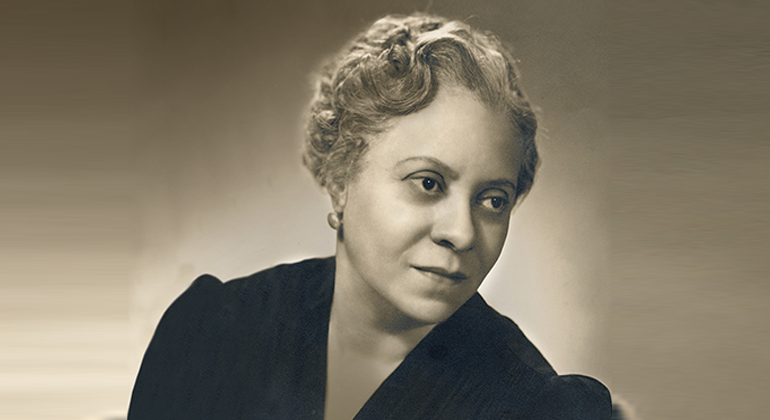
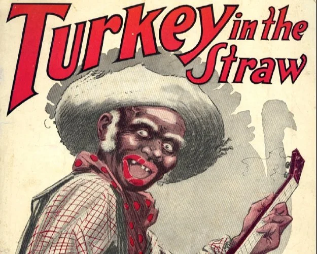
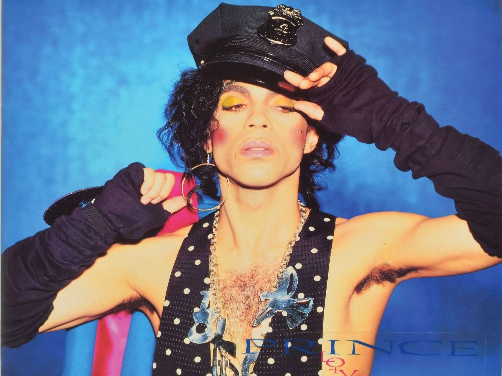
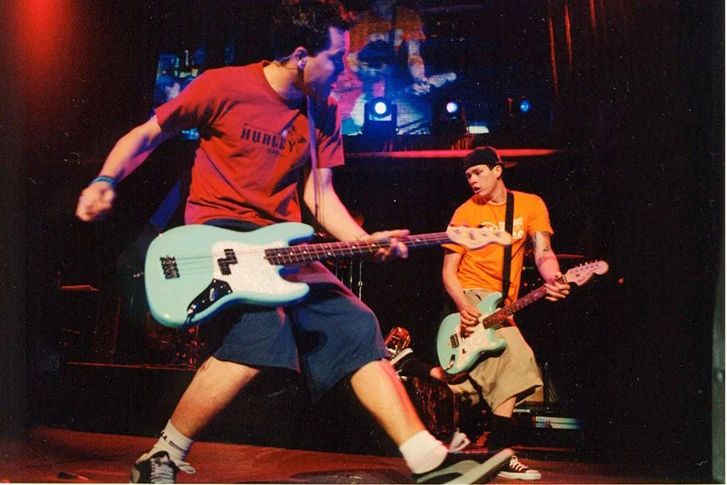
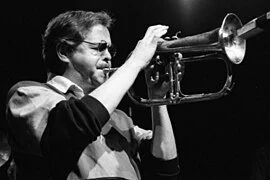
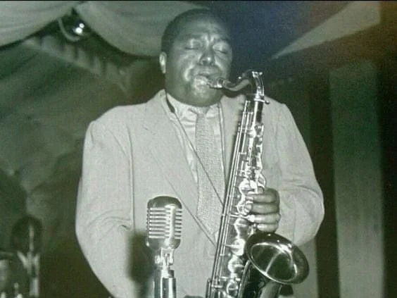

Welcome to the new home of the Half-Brewed Blog!
As an academic navigating the endless sea of papers and research, I’ve often found myself brimming with ideas that never quite reached their full potential. These thoughts, partially-formed yet packed with possibility, are what inspired this space. The Half-Brewed Blog is a place to share those incomplete ideas—the ones that may not have a full conclusion but are enough to spark conversations and new ways of thinking. Whether you're a fellow student, a researcher, or just curious, I hope these half-brewed thoughts will inspire you to explore, question, and take the next step in your own projects.
“Gender Inclusion, Gender Exclusion, and Safety Delusions in Mexican Ska Festivals,” A Presentation for the SEM 2024 Annual Meeting
This post is more of an advertisement for my upcoming presentation at the Society for Ethnomusicology Annual Meeting. If you are interested in my work, please come and see what I have been working on recently. If my presentation at the conference led you here, please feel free to reach out or comment on this post to continue the conversation.

Looking into Florence B. Price’s “Five Folksongs in Counterpoint”
While de-cluttering my files, I stumbled upon this paper I wrote several years ago. This was written for a class I took on American Music the first semester of my PhD. This was a significant year in terms of reforming what I wanted as a researcher. During my first semester at UF, my professors provoked debate of equity in history. I questioned the canonization of art music in a way that I never had, and it changed my perception of what it means to write meaningful scholarship. I used this decolonization of my mind as a chance to write about an American composer whose work I was not very familiar with. Coming from a jazz background, I was interested in composers who drew from African American spirituals and the blues. In my undergraduate history courses, we had discussed William Grant Still, but I wanted to look into Black artists who were not found in the textbooks on Western art music that I had read. I considered a few composers before I read Rae Linda Brown's book The Heart of a Woman: The Life and Music of Florence B. Price. I listened to a few pieces and I knew I had to learn more. I appreciated the chance to write a paper that took me so far outside my comfort zone of jazz studies and popular music studies.

A Spoonful of Levity Helps the Racism Go Down
This post looks at the antebellum genre of "coon songs" that relied heavily on derogatory caricatures of African Americans for their content and performance. By presenting racist stereotypes in simple popular music forms, they helped keep racism and racist legislation palatable to American audiences.

The Performance of Outrage Over Black Androgyny
This post looks into the reception of Prince and Grace Jones, artists that blurred or defied gender norms, and ways in which their blurring of gender binaries has been received as distasteful. Rather than concentrate on how these artists embody androgyny, the aim of this paper is to show how critics (professional or armchair) essentialize artists as distasteful. This is the first time in my research that I rely on anecdata in the form of reviews on sites like Amazon and IMDB. Leave a comment and let me know what you think.

Jungle Music and a Legacy of Primitive African Portrayal
This post was written as part of the scholarly discourse regarding how Ellington’s music was written and marketed in order to perpetuate primitivized erotic narratives of African peoples. I think there are some promising ideas in this writing, but there are connections made that I want to make stronger. Let me know what you think.

Adolescent Rebellion and the Taboo Music of Blink 182
The first paper written as a Ph.D. student at the University of Florida. I spent this first semester considering vulgarity in music. I find it very interesting what we consider vulgar and ways in which the taboo and vulgarity are culturally constructed. This was a first attempt at writing about vulgarity in some way, but after stepping away from the paper, I am not sure how move forward with this as a publication.
Comparing Charlie Parker and Sonny Criss on ‘The Squirrel’
Another paper from my time at Rutgers. The initial thought for this post was comparing the playing of Charlie Parker to his disciples, particularly players like Sonny Criss or Sonny Stitt who were directly compared to Parker or described as mimics. If I could devote endless time to every whim, this would be a fun idea to chase down. However, this idea became buried amidst everything and will live in the blog (for now).

“Kenny Wheeler’s Music and the Craft of Musical Composition”
In celebration of the completion of my thesis, "Angel Song: The Suite Life and Music of Kenny Wheeler," I am creating a post! This is the ninth chapter of my thesis on the great Kenny Wheeler. This began as a theory exercise for a Jazz Theory course that was later inserted into my thesis. When I began I wanted to engage with the writing of Hindemith since Wheeler cited his theory text as one that he used to learn the craft. This chapter and my entire thesis are available on the Rutgers Website! Please give this a read and let me know what you think. Is there promise? Is this nothing more than a theory exercise?

Charlie Parker on Tenor
The idea that started it all. In my first blog post, I present a paper I wrote during my time as a master's student at Rutgers University. I loved digging into Bird's playing on tenor saxophone, but I had no idea how to expand the premise to a full article. Rather than let it rest in my digital graveyard of un-pursued term papers, I decided to give it life as the inaugural post for the Half-Brewed Blog.